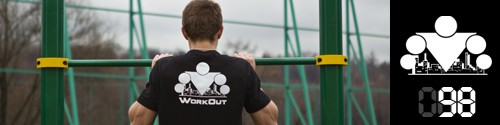

<==== Вернуться к оглавлению

Последний из
могикан турбо-блоков!
Сегодня следует хорошенько размяться, потому что упражнения мы будем деле по принципу "лесенки". Кто не первый день занимается, или помнит своё дворовое детство, тот хорошо знает о чем пойдет речь, ну а для всех остальных будет небольшая инструкция ;)
В этот раз не будет первого упражнения, хотя вы и можете включить какое-нибудь из представленных ранее в разминку, поэтому сразу переходите к комплексу из трёх упражнений. Вы выполните его всего 1 раз, с полным восстановлением между упражнениями (5-7 минут, вы должны восстановиться, но не должны "остыть"). Ну и как всегда помним про качество выполнения!
Упражнение №1. Подтягивания. Делаем 1 раз, слезаем с турника, делаем 2 раза, слезаем, делаем 3 раза и т.д., пока не достигнете максимума. После этого начинайте двигаться вниз. То есть, если ваш максимум был 10, то затем вы делаете 9, 8, 7 и т.д. Если не можете сделать 7 за один подход, разбейте на несколько подходов (каждый должен быть на максимум!), главное - сделать нужное количество. И так двигаетесь вниз до 1.
Упражнение №2. Отжимания. Делаем отжимания по такой же схеме, только прибавлять (и потом отнимать) будем сразу по 2 повторения. То есть сделали 2, встали, сделали 4, встали и т.д. до максимума.
Упражнение №3. Приседания. Делаем по такой же схеме, только прибавлять (и потом отнимать) будем сразу по 5-10 (в зависимости от вашего уровня). То есть сделали 10, встали в полный рост, встряхнулись, сделали 20, встали, встряхнулись и т.д.
Если вы действительно всё сделаете на максимум, то больше ничего и не сможете делать =) Поскольку такие штуки лучше не повторять слишком часто, то я бы рекомендовал вам заснять на видео ваш подвиг ;) Ну а завтра мы будем отдыхать и подводить итоги ;)
======> День 99. Отдых и Объявление